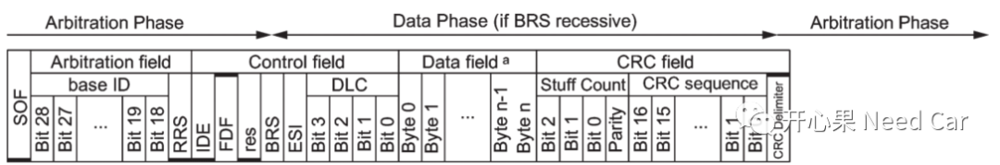
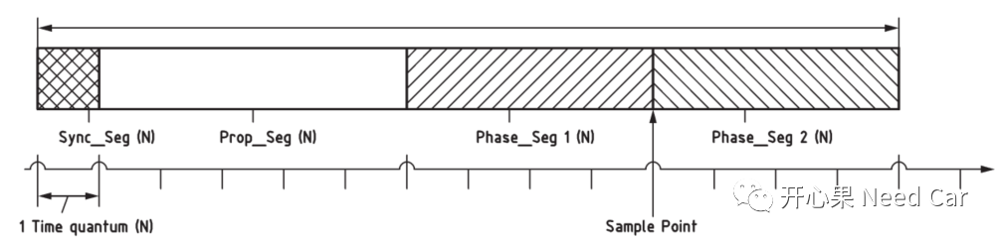
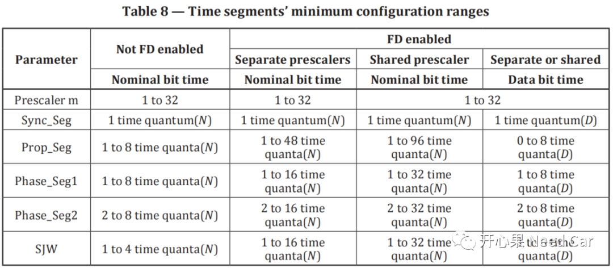

开心果 Need Car · 2022-01-10T20:22:00+08:00 · 微信原文
实际的工程项目中，物理层测试中采样点测试是必不可少的一项，如果出问题，必不可少的就是排查位定时（Bit Time）。只有对Bit Time有了深刻的理解，在开发中才能更好的减少Bug。本文，深聊一下CAN/CANFD的Bit Time。
初识Bit Time
为什么要了解Bit Time?因为CAN节点同步、网络传输延迟补偿和采样点定位，都与位时序密切相关。
如果当前的CAN节点支持CANFD，且使能CANFD功能，则一帧报文需要支持两个位速率，即：Nominal Bit Rate(NBR)和Date Bit Rate(DBR)。在驱动层面，NBR和DBR均由独立的寄存器设置。需要注意的是：DBR ≥ NBR。
对于经典CAN，没有DBR，只有CANFD才有DBR。数据段（Data Phase）的开始由一个隐性位BRS(Bit Rate Switch)标识。
仲裁段和数据段
如下图所示，对于CANFD，一帧报文分为：仲裁段->数据段->仲裁段。这里注意区分Phase和Field，不要混淆。

Time quantum(Tq)
Tq是一个位时间的最小度量单位，一般开发需求会明确一个位时间（Bit Time）包含多少个Tq。CANFD由Arbitration Phase和Data Phasse两种Phase组成，因此Tq也分为Tq(N)和Tq(D)。
如下以一个具体需求示例进行分析，需求表格1。
| Frame Phase | Number of time quantas | Quanta time | Sjw number of time quantas | tSEG2 number of time quantas |
| Arbitration Phase | 80 | 25ns | 16 | 16 |
| Data Phase | 20 | 25ns | 4 | 4 |
如上针对CANFD报文的Bit Time和Tq关系给了一个明确的描述，CANFD报文的Arbitration Phase速率为500Kbps(80*25 = 2000ns = 2ms，即1s(1000ms)传输500个bit，Data Phase速率为2Mbps（20*25 = 500ns = 0.5ms，即1s传输2000个bit）。
我们知道，CAN/CANFD一个bit可以切分成四个Segment，每个Segment包含的Tq不同（具体根据需求在Can模块进行配置），如下所示：

NTq计算：NTq = Sync_Seg + Prop_Seg + Phase_Seg1 + Phase_Seg2。实际开发中会配置SP、SSP、Tseg1、Tseg2以及Tsjw。几乎不会配置Sync_Seg、Prop_Seg、Phase_Seg1、Phase_Seg2。Prop_Seg和Phase_Seg1实际合并成Tseg1。Tseg1 = Prop_Seg + Phase_Seg1，Tseg2 = Phase_Seg2。
注意：开发中，很多甲方没有明确Sync_Seg给多少，很多时候我们很困惑到底多少好。如果细看，大多需求中会说参考《ISO 11898-1》，这也是我们常忽略的。
在《ISO 11898-1》中有一个Table8，可以看出Sync_Seg均会配置1Tq。我们根据需求给的SP、SSP以及部分Segment的Tq，也可以反推每个Segment的Tq量。

Sample Point
采样点很好理解，就是在一个Bit时间内选择一个合适时间点采样，在该时间点判断总线压差。计算公式：Sample Point = Tseg1/(Tseg1 + Tseg2)。需求里一般会明确采样点(测试就根据这个需求测采样点)，比如要求SP = 80%，SSP = 75%，再结合Tq表我们就能推出bit每个Segment包含多少Tq了。
示例：
SP = 80%，SSP = 75%，需求表格1。
Arbitration Phase中，一个bit的总Ntq = 80，则Tseg1+Sync_Seg = 64Tq，Tseg2 = Phase_Seg2 = 16，又知道Sync_Seg默认是1(大多数芯片的Data Sheet中也会推荐Sync_Seg = 1Tq)，所以Prop_Seg + Phase_Seg1 = Tseg1 = 63Tq，Prop_Seg和Phase_Seg1在需求里如果不给明确值，则按照Table8合理给值即可，因为一般会让配置Tseg1。
Data Phase计算方式类似Normal Phase，不再赘述。
往期精彩回顾